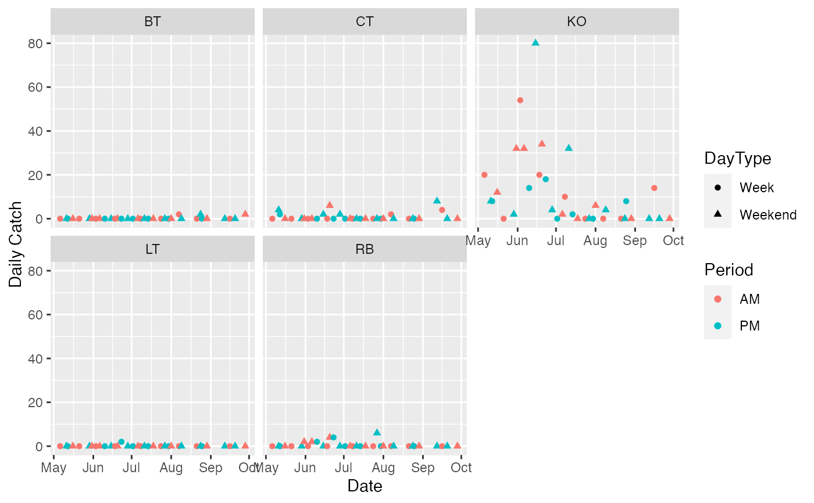

A prototype R package to Analyse Angler Creel Survey Data. Currently only the Traditional Access Design for One Access Site method is implemented.
For a description of the available data sets type data(package = "creelr").
For a description of the available demonstrations type demo(package = "creelr").
Pollock, Kenneth Hugh, Cynthia M. Jones, and T. L. Brown. Angler Survey Methods and Their Applications in Fisheries Management. American Fisheries Society Special Publication 25. Bethesda, Md: American Fisheries Society, 1994.
demo(toa_dummy)#> #> #> demo(toa_dummy) #> ---- ~~~~~~~~~ #> #> > library(ggplot2) #> #> > data(toa_dummy) #> #> > toa_dummy #> Date Period RodHours Catch #> 1 2010-02-02 PM 5 4 #> 2 2010-02-03 AM 7 2 #> 3 2010-02-06 PM 33 15 #> 4 2010-02-07 AM 10 20 #> 5 2010-02-08 PM 8 5 #> 6 2010-02-11 PM 9 6 #> 7 2010-02-13 PM 35 18 #> 8 2010-02-14 AM 15 10 #> 9 2010-02-17 AM 11 7 #> 10 2010-02-19 AM 3 3 #> 11 2010-02-20 AM 36 21 #> 12 2010-02-21 PM 21 15 #> 13 2010-02-23 AM 7 2 #> 14 2010-02-24 PM 16 11 #> 15 2010-02-27 PM 43 28 #> 16 2010-02-28 PM 18 11 #> #> > plot_creel_data(toa_dummy) + ylab("Daily Catch")#> Warning: `group_by_()` is deprecated as of dplyr 0.7.0. #> Please use `group_by()` instead. #> See vignette('programming') for more help #> This warning is displayed once every 8 hours. #> Call `lifecycle::last_warnings()` to see where this warning was generated.#> Warning: `summarise_()` is deprecated as of dplyr 0.7.0. #> Please use `summarise()` instead. #> This warning is displayed once every 8 hours. #> Call `lifecycle::last_warnings()` to see where this warning was generated.#> Warning: `mutate_()` is deprecated as of dplyr 0.7.0. #> Please use `mutate()` instead. #> See vignette('programming') for more help #> This warning is displayed once every 8 hours. #> Call `lifecycle::last_warnings()` to see where this warning was generated.#> Warning: `filter_()` is deprecated as of dplyr 0.7.0. #> Please use `filter()` instead. #> See vignette('programming') for more help #> This warning is displayed once every 8 hours. #> Call `lifecycle::last_warnings()` to see where this warning was generated.#> #> > toa_dummy <- trad_one_access(toa_dummy)#> Error: Problem with `summarise()` input `Days`. #> ✖ could not find function "n" #> ℹ Input `Days` is `n()`. #> ℹ The error occured in group 1: DayType = "Week".demo(toa_example)#> #> #> demo(toa_example) #> ---- ~~~~~~~~~~~ #> #> > library(plyr) #> #> > library(dplyr)#> #>#> #> #> #>#> #> #>#> #> #>#> #> > library(tidyr) #> #> > library(magrittr)#> #>#> #> #>#> #> > library(ggplot2) #> #> > data(toa_example) #> #> > toa_example %<>% gather(key = "Species", value = "Catch", #> + Catch, KOCatch, CTCatch, RBCatch, BTCatch, LTCatch) #> #> > toa_example$Species %<>% sub("(.+)(Catch)", "\\1", .) #> #> > toa_example %<>% filter(Species != "Catch") #> #> > summary(toa_example) #> Date Period RodHours Species #> Min. :2014-05-06 AM:270 Min. : 0.500 Length:615 #> 1st Qu.:2014-05-31 PM:345 1st Qu.: 4.000 Class :character #> Median :2014-06-20 Median : 7.000 Mode :character #> Mean :2014-07-01 Mean : 7.356 #> 3rd Qu.:2014-07-30 3rd Qu.:10.000 #> Max. :2014-09-28 Max. :20.000 #> Catch #> Min. : 0.0000 #> 1st Qu.: 0.0000 #> Median : 0.0000 #> Mean : 0.3854 #> 3rd Qu.: 0.0000 #> Max. :15.0000 #> #> > plot_creel_data(toa_example, by = "Species", holidays = as.Date("2014-05-29"), #> + weekend = c("Friday", "Saturday", "Sunday")) + #> + ylab("Daily Catch") + facet_wrap(~Species)#> #> > toa_example %<>% ddply("Species", trad_one_access, weekend = c("Friday", "Saturday", "Sunday"), #> + holidays = as.Date("2014-05-29"))#> Warning: `select_()` is deprecated as of dplyr 0.7.0. #> Please use `select()` instead. #> This warning is displayed once every 8 hours. #> Call `lifecycle::last_warnings()` to see where this warning was generated.#> #> > plot_creel_estimates(toa_example) + facet_wrap(~Species) + ylab("Monthly Catch")#> Warning: Removed 1 rows containing missing values (geom_segment).#> Warning: Removed 1 rows containing missing values (geom_segment).#> Warning: Removed 1 rows containing missing values (geom_segment).#> Warning: Removed 1 rows containing missing values (geom_segment).#> Warning: Removed 1 rows containing missing values (geom_segment).#> #> > sum_creel_estimates(toa_example, by = "Month") #> Month Parameter Estimate SD Lower Upper #> 10 9 Effort 5960.00 NA NA NA #> 8 8 Effort 3358.75 463.90406 2595.695720 4121.8043 #> 6 7 Effort 4211.50 427.64904 3508.079928 4914.9201 #> 4 6 Effort 13305.00 1228.36943 11284.512087 15325.4879 #> 2 5 Effort 10399.58 1429.92658 8047.563406 12751.6033 #> 9 9 Catch 364.00 NA NA NA #> 7 8 Catch 109.00 51.09305 24.959408 193.0406 #> 5 7 Catch 165.60 102.71008 -3.343043 334.5430 #> 3 6 Catch 1024.00 259.48956 597.177651 1450.8223 #> 1 5 Catch 385.00 136.19247 160.983322 609.0167 #> #> > sum_creel_estimates(toa_example, by = "Species") #> Species Parameter Estimate SD Lower Upper #> 10 RB Effort 7446.96667 NA NA NA #> 8 LT Effort 7446.96667 NA NA NA #> 6 KO Effort 7446.96667 NA NA NA #> 4 CT Effort 7446.96667 NA NA NA #> 2 BT Effort 7446.96667 NA NA NA #> 9 RB Catch 70.50000 NA NA NA #> 7 LT Catch 8.50000 NA NA NA #> 5 KO Catch 1769.60000 NA NA NA #> 3 CT Catch 172.83333 NA NA NA #> 1 BT Catch 26.16667 NA NA NA